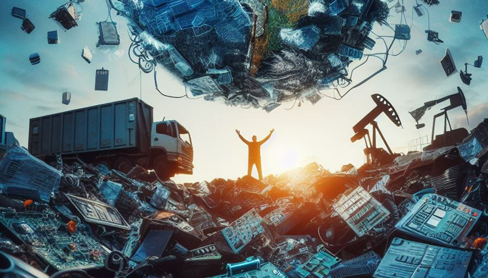
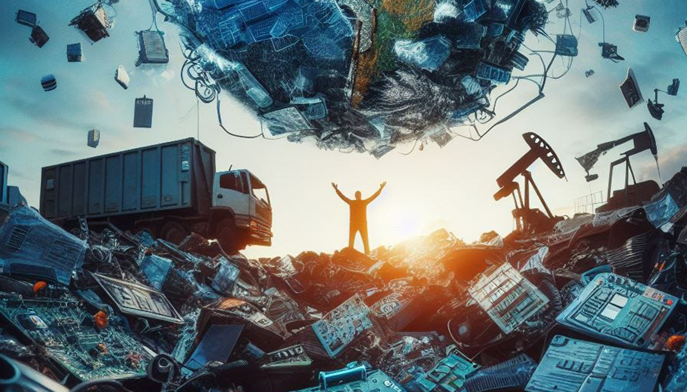
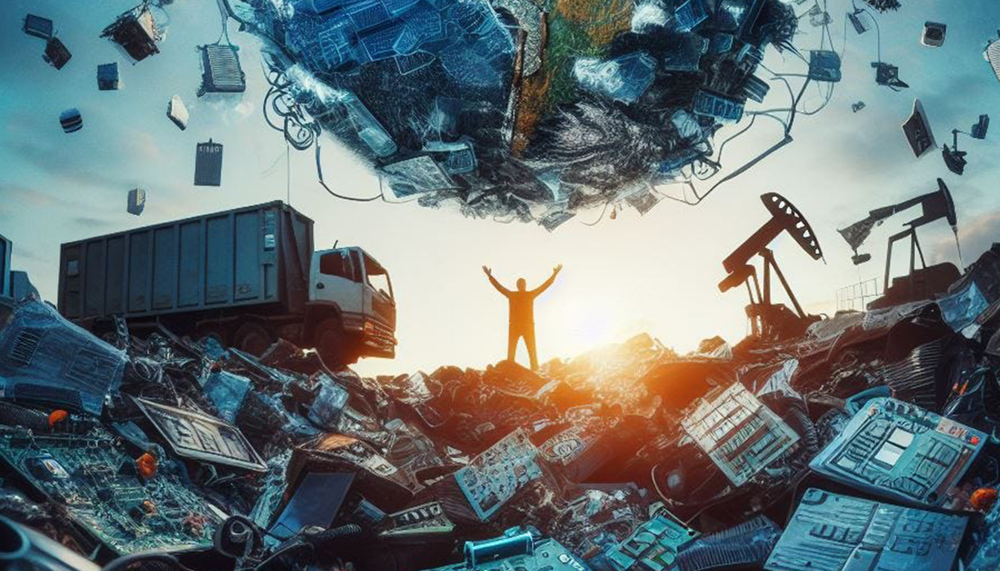

Voque Impact of E-Waste
Explore the real-world effects and efforts to combat e-waste across the globe.
 

E-waste is one of the fastest-growing waste streams globally. It poses significant risks to our environment and health, especially in developing countries where electronics are often dismantled by hand, exposing workers to toxic substances.
If improperly disposed of, e-waste can leak harmful materials like mercury and lead into the soil and groundwater. Additionally, it contributes to greenhouse gas emissions and resource depletion, as many of the metals in electronics are mined in environmentally destructive ways.
By tackling e-waste responsibly, we are not only protecting the environment but also reclaim valuable materials, reduce energy use, and promote sustainable development. Recycling just one million laptops saves the energy equivalent to the electricity used by 3,500 homes in a year.
Explore the real-world effects and efforts to combat e-waste across the globe.
